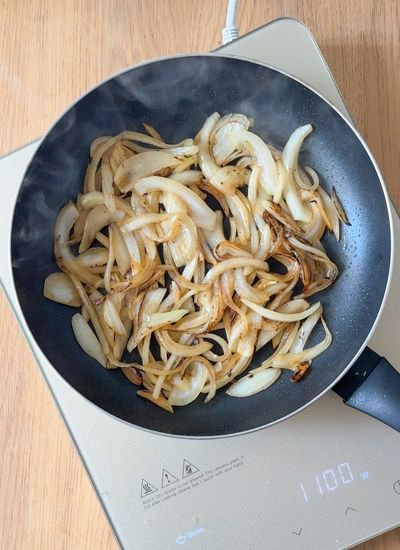
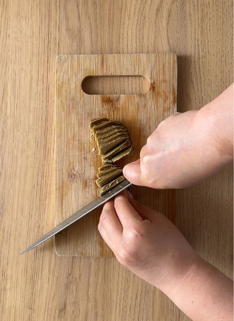
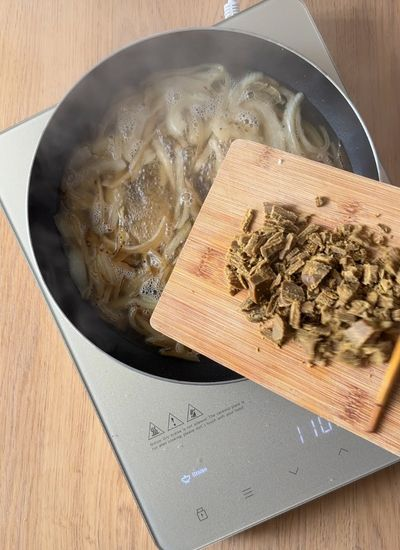
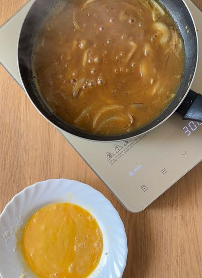
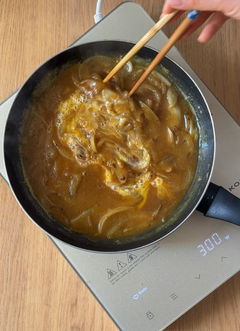
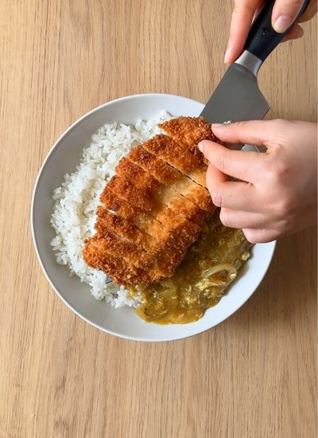
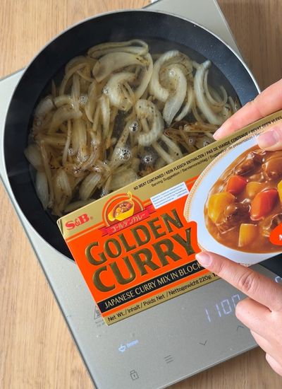

Principales · Japonesa
← Recetas
Katsu Curry Japonés

Preparación
- Corta la pechuga en filetes de 1-1,5 cm. Salpimienta. Reboza en este orden: harina, huevo batido y panko. Reserva.
- Pon a cocer el arroz blanco para acompañar.
- Pela y corta la cebolla en juliana. Póchala con aceite y sal a fuego medio 4-5 minutos.

- Trocea las 2 pastillas de curry.

- Añade los 2 vasos de agua y el curry troceado. Remueve hasta que la pastilla se disuelva.

- Incorpora 1 huevo batido removiendo unos 2 minutos.

- Deja que la salsa espese hasta el punto deseado.

- Cocina el katsu: fríe ~2 min por lado, u horno a 200 °C 25-30 min / airfryer dándole la vuelta a media cocción.
- Emplata: arroz de base, salsa curry al lado y el katsu cortado por encima. Sirve.

Galería
